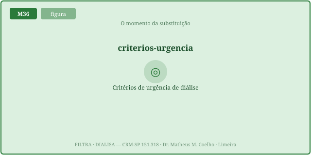
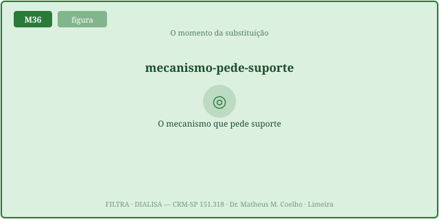
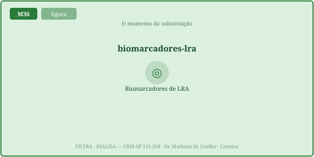
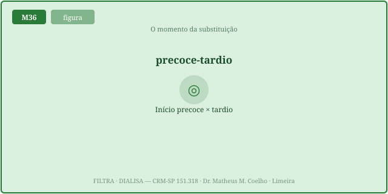
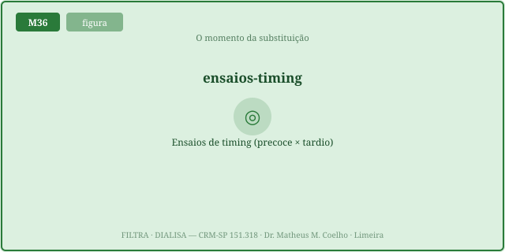
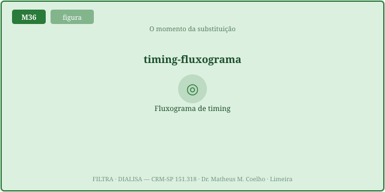

Quando iniciar é uma decisão de mecanismo, não de número. As
Fig. 1–8 voltam no Caso, na Trilha e na Avaliação. Atribuição em CREDITS.md (em curadoria).
Há situações que pedem TRS já, refratárias ao tratamento clínico: hipercalemia refratária com alterações no ECG; acidose metabólica grave refratária; sobrecarga de volume refratária (edema pulmonar); uremia sintomática (pericardite, encefalopatia); certas intoxicações dialisáveis. O mapa AEIOU (M35) lista as indicações; aqui o foco é o momento.

O mesmo número significa coisas opostas conforme responde ou não. K⁺ 6,5 que cai com insulina-glicose é responsivo; K⁺ 6,5 que volta a subir apesar do tratamento é refratário — e só esse pede a máquina. A resposta ao clínico abaixa a indicação; a refratariedade a dispara.


Iniciar pela tendência/preempção (precoce) × esperar o gatilho clínico (tardio). ELAIN (centro único, cirúrgico) sugeriu benefício precoce; AKIKI e STARRT-AKI (multicêntricos) não mostraram benefício de iniciar cedo na maioria — e a estratégia tardia evitou TRS em muitos que se recuperaram sozinhos. Conclusão prática: esperar o gatilho é seguro.


Cada eixo recebe uma gravidade 0→1 (1 = no limiar refratário). O score de indicação soma as gravidades, encolhe com a resposta ao clínico e cresce com a tendência ascendente. O gatilho dispara quando qualquer eixo cruza o refratário sem responder — independente do score total.

Um número alto que responde e cai não pede a máquina; um número moderado que sobe apesar do clínico caminha para o gatilho. A trajetória conta mais que o ponto — por isso o teste de estresse com furosemida (resposta diurética) ajuda a prever quem progride.
UTI. LRA por sepse. A pergunta de cada plantão: é o momento de dialisar? O número não responde sozinho — o mecanismo refratário responde (volte às Fig. 1, 3 e 5).
Não. É sobre função refratária: o eixo do meio interno que falhou e não cede ao clínico. A creatinina/ureia gradua a lesão, mas não obriga a iniciar.
Hipercalemia refratária com ECG; acidose metabólica grave refratária; sobrecarga de volume refratária (edema pulmonar); uremia sintomática (pericardite, encefalopatia); intoxicação dialisável.
Cruzar o limiar de refratariedade E não responder ao tratamento clínico. K⁺ 6,5 que cai com insulina-glicose é responsivo; o que volta a subir é refratário — e só esse pede a máquina.
Porque o número da ureia sozinho não intoxica de forma uniforme. O gatilho é a síndrome urêmica (pericardite, encefalopatia, sangramento) — a função descompensada, não o valor.
ELAIN (centro único, cirúrgico) sugeriu benefício precoce; AKIKI e STARRT-AKI (multicêntricos) não mostraram ganho de iniciar cedo na maioria. Esperar o gatilho clínico é seguro.
Muitos pacientes recuperam a função sem diálise; a estratégia tardia evita TRS desnecessária. Sem gatilho, iniciar cedo só antecipa o risco de acesso, hipotensão e anticoagulação.
Dano de cateter (infecção, trombose), hipotensão intradialítica/stunning, exposição à anticoagulação do circuito — tudo sem ganho de desfecho. O "cedo demais" tem custo.
A função específica que falhou de forma refratária: depurar escória, regular K⁺/ácido-base, retirar volume. A TRS substitui essa função — não "a creatinina".
A trajetória: um número moderado que sobe apesar do clínico caminha para o gatilho; um número alto que cai e responde, não. O furosemide stress test prediz quem progride.
Soma as gravidades dos quatro eixos, encolhe com a resposta ao clínico e cresce com a tendência ascendente. Mas o gatilho dispara por qualquer eixo refratário, independente do score.
O suporte entra quando a defesa do meio interno (volume, K⁺, ácido-base, escória) falha de forma refratária. A máquina não substitui o rim — substitui a função descompensada, no momento em que ela descompensa.
Os controles do Lab alimentam estas curvas. Em azul, o score de indicação sobe com a gravidade global; em laranja, o risco do início precoce (alto quando ainda há pouca gravidade — o "cedo demais"); em vermelho, o risco do tardio. O marcador é o ponto de operação atual; a faixa à esquerda é a janela onde esperar é seguro, a da direita é onde o gatilho obriga.
| Saída | Atual | Comentário |
|---|---|---|
| Score de indicação (0–100) | — | quanto a função pede suporte |
| Gatilho absoluto cruzado? | — | qualquer eixo refratário |
| Eixo dominante | — | a função que mais pede |
| Risco do início precoce (0–100) | — | o "cedo demais" |
| Risco do tardio (0–100) | — | o "esperar demais" |
| Recomendação | — | iniciar / preparar / esperar |